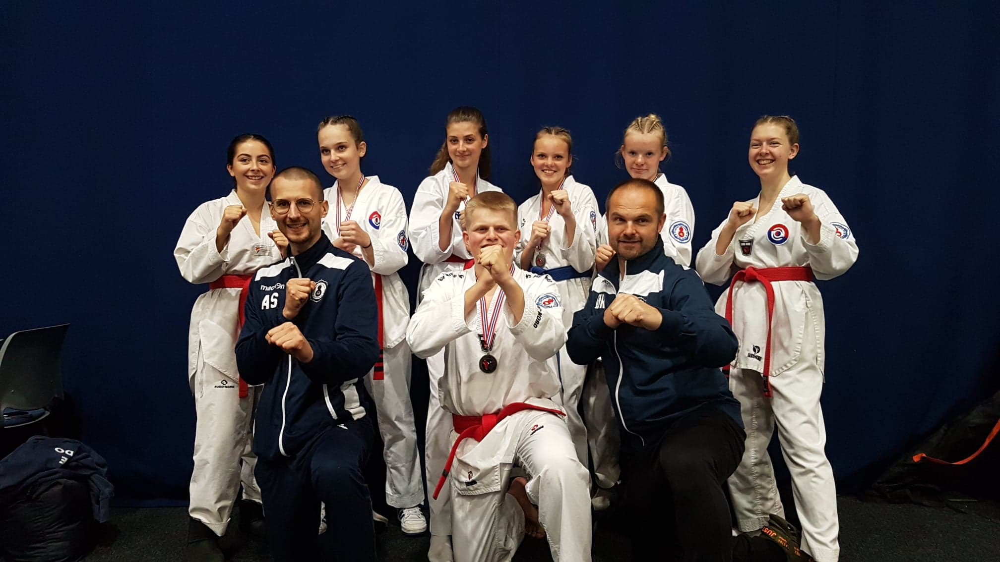
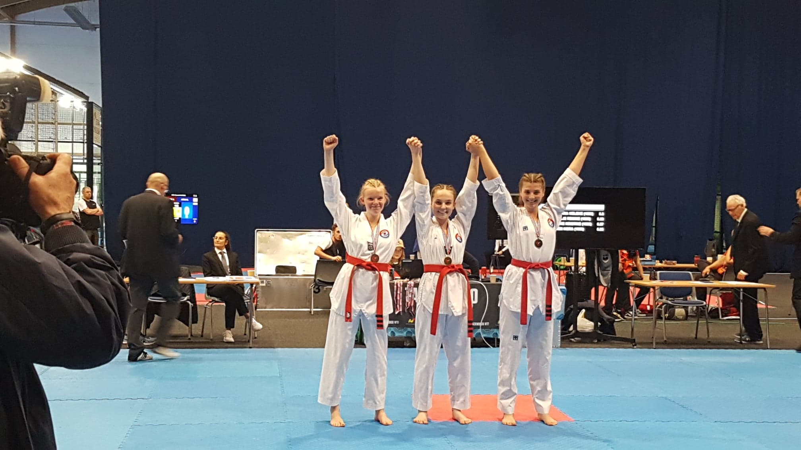

Innlegg
Gratulerer med strålende plasseringer i NC3

Hele syv utøvere fra klubben deltok i NC3 i Letohallen i helgen, og konkurrerte i Poomse, og det ble en rekke medaljer!

I senior-klassen deltok Alexander Linvik, og tok sølv i sin første konkurranse. Gratulerer! I kadett-klassen deltok Amanda Zabele, og hun tok også sølv. Gratulerer! I junior-klassen deltok Nora Henriksen, Sara Helene Fischer, Silje Regine Skøien, Lene Kristine Røste og Helene Mala Haga. I denne klassen var det kun de fem fra vår egen klubb som var med, så derfor ble det gull til Sara, sølv til Silje og bronse til Lene. Gratulerer så mye! Til tross for mye venting og utsettelser, var dette en lærerik konkurranse. Ekstra gøy var det at det var så mange supportere med, som bidro til gode resultater. Takk for støtten!